01
Акт IПодход
3D-визуализация вывесок и фасадов в Blender с ночным освещением: подсветка логотипа, реалистичные отражения на стекле и металле.

3D-визуализация фасадов и вывесок: Navruz Hotel, Za Travel, офисное здание в ночной подсветке.
3D-визуализация вывесок и фасадов в Blender с ночным освещением: подсветка логотипа, реалистичные отражения на стекле и металле.
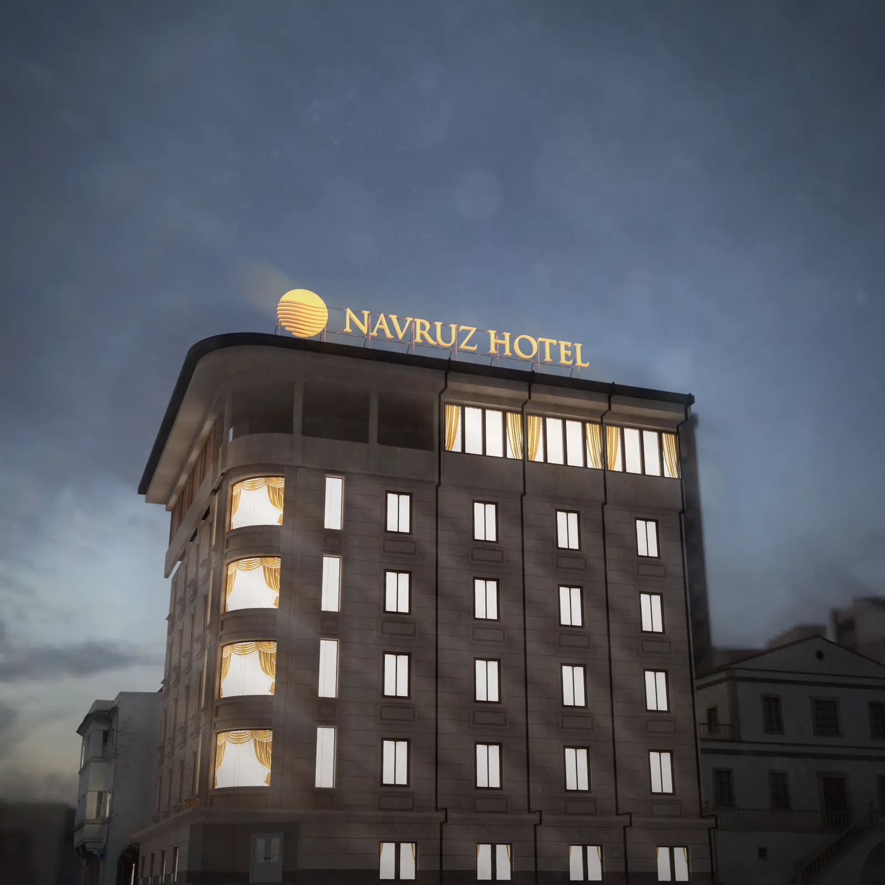
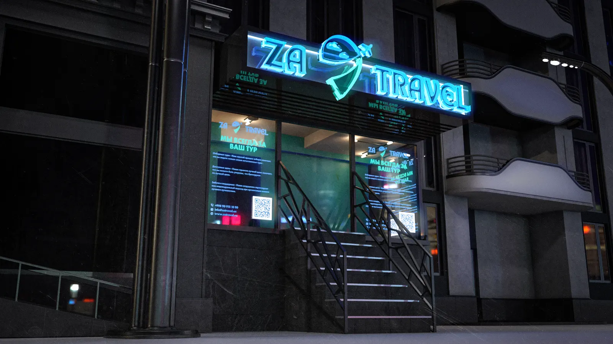
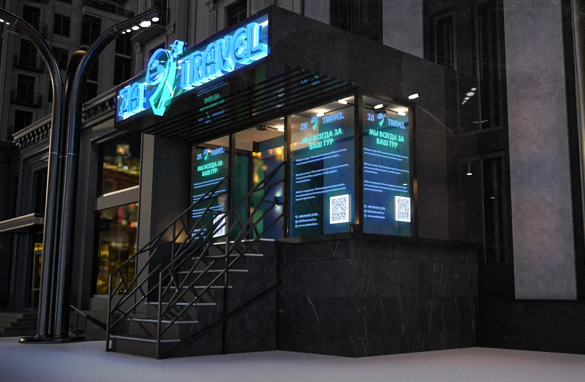
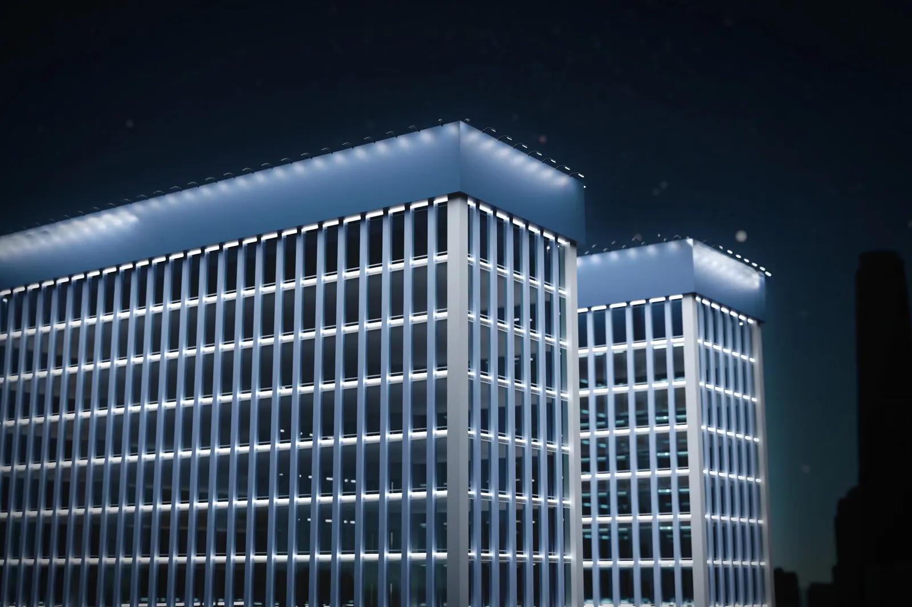
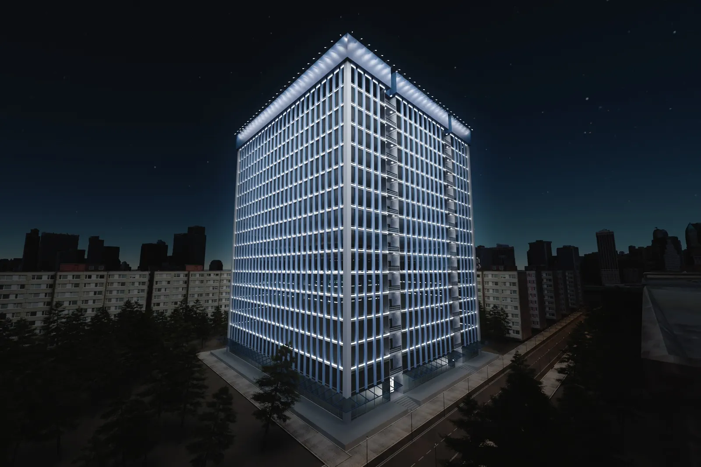
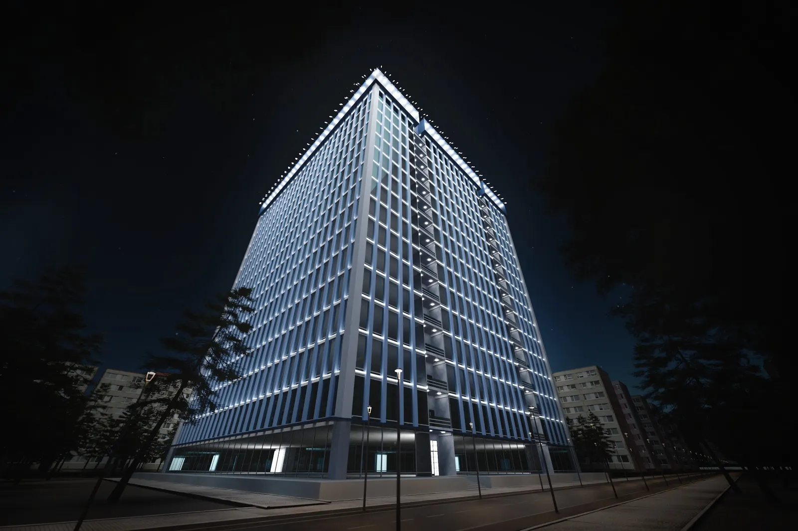
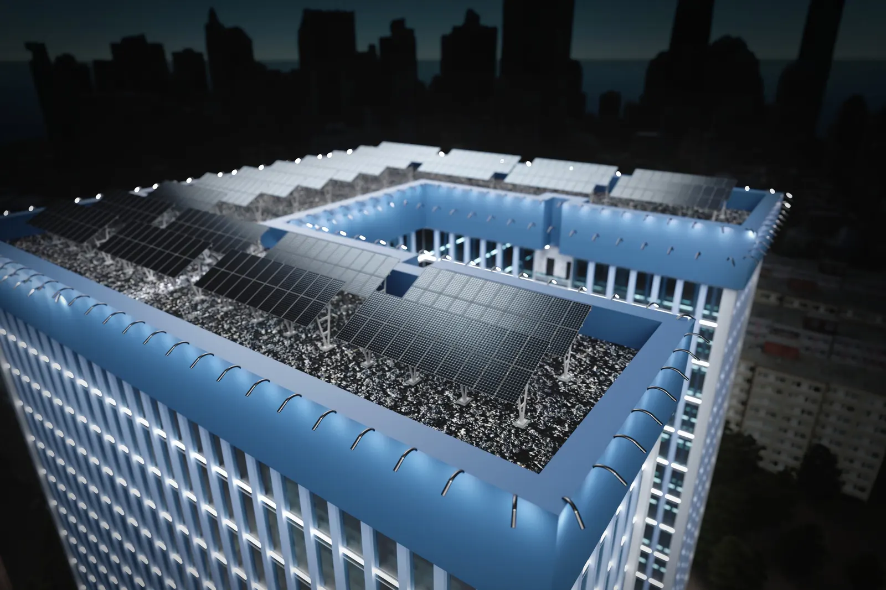
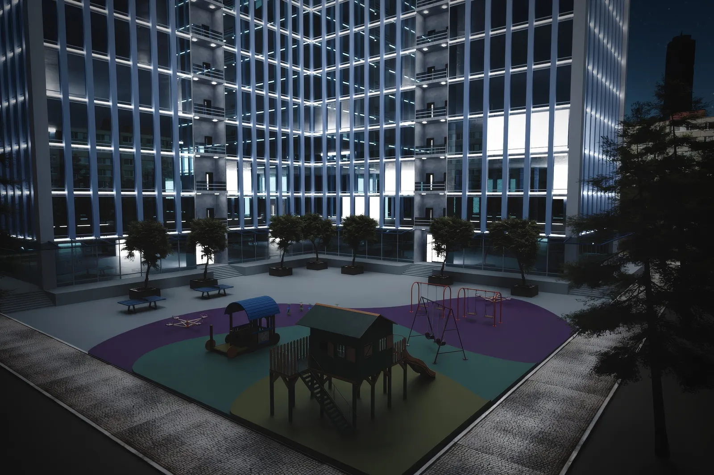
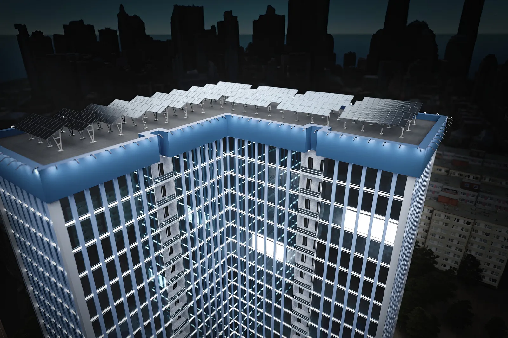
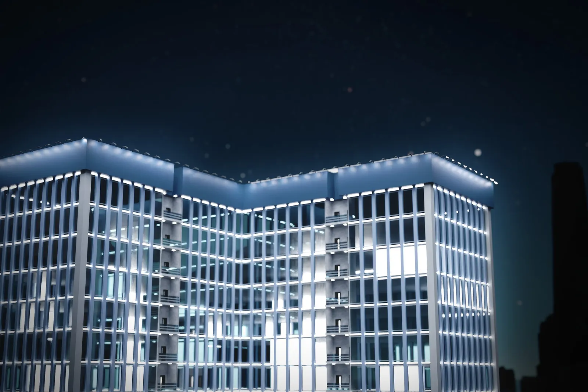
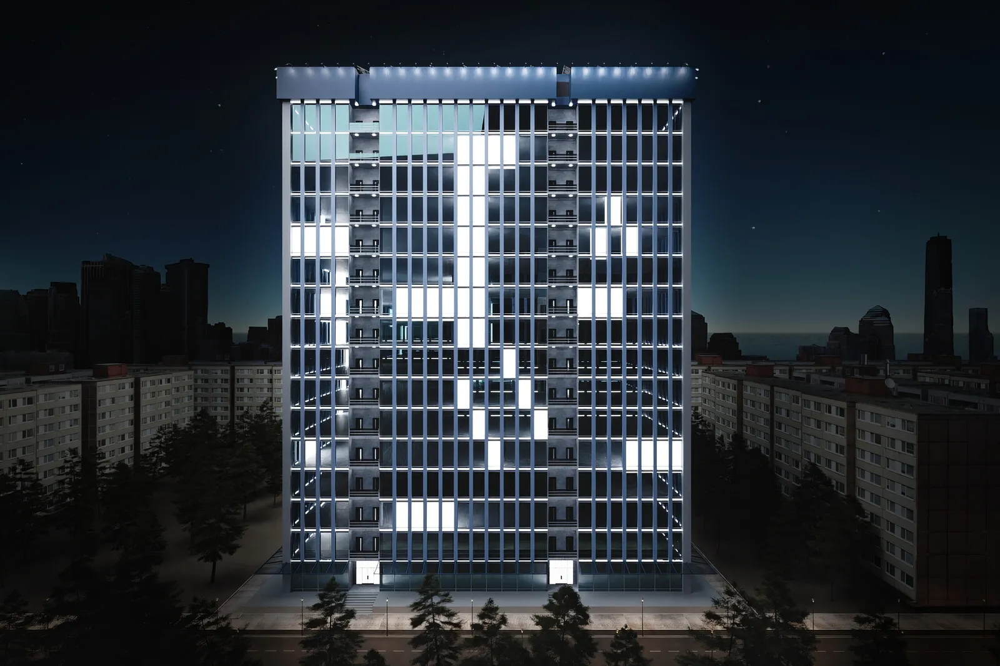
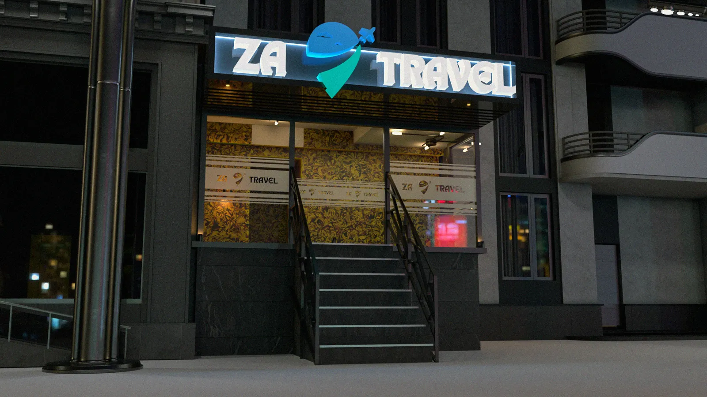
Контакты появятся здесь в ближайшее время.